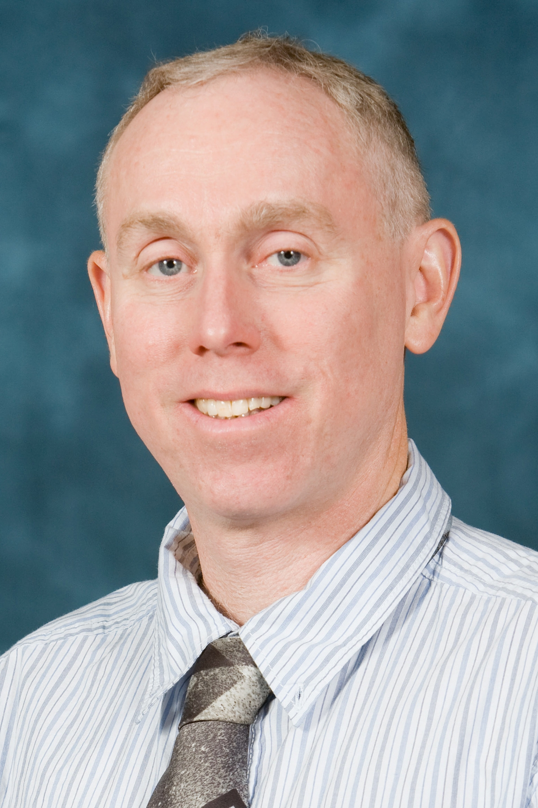

Robert Krasny received my Ph.D. degree in Applied Mathematics in 1983 from the University of California in Berkeley under the supervision of Alexandre J. Chorin.
He spent 1984-1987 as a postdoc at the Courant Institute and came to Michigan in 1987.
His honors include a National Science Foundation Postdoctoral Research Fellowship (1984-1987), an invited lecture at the International Congress of Mathematicians in Kyoto (1990), and an Arthur F. Thurnau Professorship (2000).
He is an applied mathematician working in the field of scientific computing.
His goal is is to develop accurate and efficient algorithms for computer simulation of physical processes.
He has several ongoing projects in fluid dynamics and molecular dynamics.